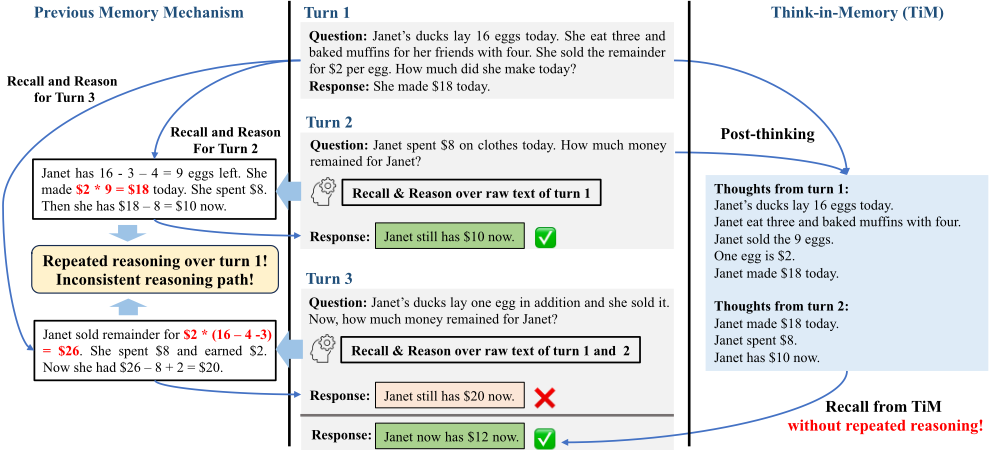
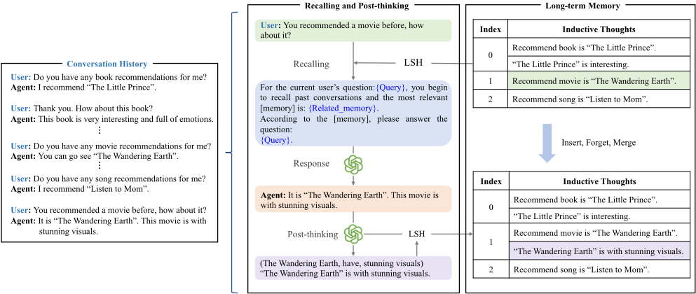
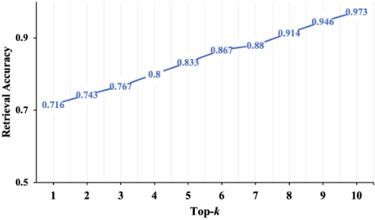
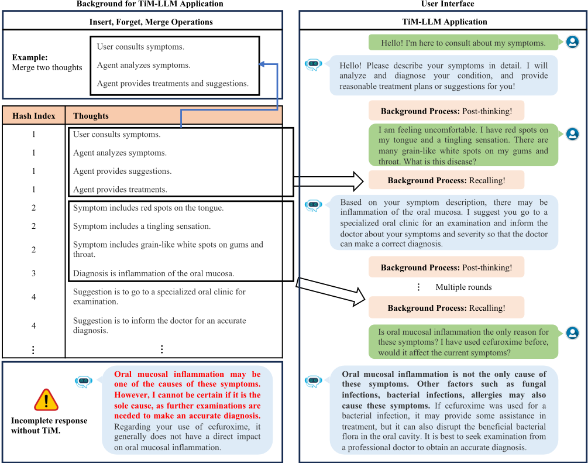

Think-in-Memory：回忆与后思考（Post-thinking）使 LLM 具备长期记忆
记忆增强 LLM 在长期人机对话中依赖对历史的反复回忆与推理，同一历史在不同问题下易产生不一致的推理结果（biased thoughts），且基于原始文本的全量相似度检索在长交互下效率较低。TiM（Think-in-Memory）提出用 LLM 自生成的归纳式"想法"（inductive thought，关系三元组形式）替代原始对话文本存入外部记忆：生成回答前先回忆相关想法，回答后进行 post-thinking 并将新旧想法合并更新记忆；通过 insert/forget/merge 三种操作实现记忆动态演化，并引入 LSH 哈希实现高效检索，框架 LLM-agnostic，可接 ChatGPT、ChatGLM 等。在 GVD、KdConv、RMD 三个数据集上，配合 ChatGLM 与 Baichuan2 均优于无记忆与 SiliconFriend 基线；top-10 检索准确率达 0.973，单次检索较全量相似度计算降低约 0.1 ms。作者还基于 ChatGLM+TiM 构建了医患对话辅助 Agent TiM-LLM。
LLM 缺乏处理超长输入的长期记忆能力；现有外部记忆方法只存原始对话文本（Q-R 对），导致 LLM 每次回答都需对第 0 至 n-1 轮历史反复重新理解与推理，同一历史在不同问题下易产生不一致的推理结果（biased thoughts）；同时逐对相似度检索在长期交互下耗时。
TiM 框架：以满足关系三元组 (Eh, ri, Et) 的 inductive thought 作为记忆单元，由 LLM Agent 通过 few-shot prompt 生成；记忆以哈希表组织，采用基于随机投影的 LSH 将相似想法分配到同一组；检索为两阶段（LSH 粗筛 + 组内相似度精排）；工作流分为 recalling（生成前回忆相关想法）与 post-thinking（生成后推理并保存新想法）两个阶段；支持 insert/forget/merge 三种记忆组织操作，各有对应 prompt；可选 LoRA（rank 16，10 epochs）微调使 LLM 适配多轮对话；整体设计为 LLM-agnostic 模块，可结合 ChatGPT、ChatGLM、Baichuan2 等。
在 GVD（中英文）、KdConv（film/music/travel）、RMD（真实医患对话）三个数据集上，TiM 配合 ChatGLM 与 Baichuan2 在 response correctness 与 contextual coherence 等指标上均优于无记忆基线与 SiliconFriend 基线（表格具体数值未在正文中完整给出）
KdConv（Travel）上 top-1 检索准确率高于 0.7，top-10 检索准确率达 0.973
在记忆长度为 140 的设置下，相比全量逐对相似度检索，单次检索时间降低约 0.1 ms
top-5 recall 即可显著提升现有 LLM 在长期对话中的表现
中文测试集上的性能提升大于英文，作者归因于 LLM 能力差异
与以往仅存原始对话文本或 token 的记忆机制不同，TiM 存储自生成的"想法"，可直接回忆而无需对历史重复推理，从机制上消除 biased thoughts；除简单读写外提供 forget/merge 等更丰富的记忆组织操作；检索在 LSH 组内进行而非全量逐对相似度计算；且为 LLM-agnostic 模块，无需调整 LLM 架构即可结合闭源与开源模型。
相关度级别：high
命中能力域：3.1 上下文工程与记忆 | 3.2 提示工程
理由：论文核心正是 Agent 记忆系统的完整设计：存什么（结构化想法而非原始文本）、如何组织（insert/forget/merge）、如何检索（LSH 两阶段）、如何更新（post-thinking），直接命中 3.1 的"Agent 记忆系统、结构化上下文组织、上下文在生产系统中的管理"；想法的生成、遗忘、合并均通过 few-shot prompt 实现，与 3.2 提示技术相关。对团队构建知识库问答、长期对话与自动化 Agent 的记忆模块有直接的设计模式参考价值。
建议动作：深入精读并做内部分享
arXiv:2311.08719v1 [cs.CL] 2023年11月15日
Lei Liu ∗
liulei1497@gmail.com 香港中文大学（深圳），蚂蚁集团
{bin.hbb,lingyao.zzq}@antfin.com 蚂蚁集团
记忆增强大语言模型（Large Language Models, LLMs）在长期人机交互中展现出卓越的性能，这主要依赖于对历史的迭代式回忆与推理来生成高质量的回复。然而，这种反复的“回忆-推理”步骤容易产生有偏差的想法（biased thoughts），即针对不同问题回忆同一段历史时会得到不一致的推理结果。相反，人类能够将想法保存在记忆中，并在回忆时无需重复推理。受这一人类能力的启发，我们提出了一种新颖的记忆机制，称为 TiM（Think-in-Memory，记忆内思考），它使 LLM 能够维护一个不断演化的记忆，用于沿对话流存储历史想法。TiM 框架包含两个关键阶段：（1）在生成回复之前，LLM 智能体从记忆中回忆相关的想法；（2）在生成回复之后，LLM 智能体进行后思考（post-thinking），并将历史想法与新想法融合以更新记忆。因此，TiM 通过将后思考产生的想法保存为历史，消除了重复推理的问题。此外，我们基于成熟的基本操作（即插入、遗忘和合并操作）制定了组织记忆中想法的基本原则，从而实现想法的动态更新与演化。进一步地，我们将局部敏感哈希（Locality-Sensitive Hashing）引入 TiM，以实现对长期对话的高效检索。我们在涵盖广泛主题的真实对话和模拟对话上开展了定性与定量实验，结果表明，为现有 LLM 配备 TiM 能显著提升其在长期交互中生成回复的性能。
大语言模型，回复生成，长期记忆
大语言模型（LLMs）的显著进步彻底变革了人类与人工智能（AI）系统之间的交互方式。这些进步在人机对话中尤其展现出卓越的性能，ChatGPT [1] 和 GPT-4 [2] 便是明证。从金融 [3]、医疗 [4] 到商业与客户服务 [5]，这些先进的 LLM 展现出理解问题并生成相应回复的非凡能力。值得注意的是，庞大的模型规模，
∗ 本工作是 Lei Liu 在蚂蚁集团担任研究实习生期间完成的。
† 通讯作者。
Xiaoyan Yang
joyce.yxy@antgroup.com 蚂蚁集团
Jinjie Gu
jinjie.gjj@antfin.com 蚂蚁集团 Yue Shen †
zhanying@antgroup.com 蚂蚁集团
zgn138592@antfin.com 蚂蚁集团
高达数千亿参数，使得这种类人能力得以在大语言模型（LLM）中涌现 [6]。
尽管在大规模语料库上预训练的 LLM 具有非凡的能力，但基于 LLM 的 AI Agent 在长期场景中仍面临一个显著局限，即无法处理超长输入 [7]。这在某些特定任务中尤为重要，例如，医疗 AI 助手 [4] 依赖以往对话中的症状来提供准确的临床诊断。因此，不具备处理长期输入能力的 LLM 可能会因遗忘重要的疾病症状而影响诊断准确性（见第 4.4 节）。因此，有必要开发具备长期能力的 AI 系统，以实现更准确、更可靠的交互。
已有大量研究致力于提升 LLM 处理长期输入的能力。总体而言，这些研究大致可分为两类：（1）基于内部记忆的方法 [8] 旨在降低自注意力（self-attention）的计算成本以扩展序列长度。为了容纳更长的输入文本，需要利用特殊的位置编码来学习相对位置。例如，[9] 探索了一种带有全局编码器 token 的块局部 Transformer，并结合额外的长输入预训练。（2）基于外部记忆的方法（也称为长期记忆机制 [10]）通常利用一个物理空间作为记忆缓存来存储历史信息，相关的历史内容可以从记忆缓存中读取，从而在不发生遗忘的情况下增强 LLM。特别地，token 和原始文本均可作为历史保存在记忆中。例如，[11] 在 BERT 嵌入 [12] 的辅助下，利用包含数万亿 token 的外部记忆缓存来增强 LLM，取得了显著的性能提升。需要注意的是，基于 token 的记忆机制需要调整 LLM 的架构以进行适配，因而难以与不同的 LLM 相结合。通过访问外部记忆缓存，增强后的 LLM 在各种语言建模基准测试（benchmark）中取得了新的最先进记录，其表现通常优于基于内部记忆的方法。因此，本工作聚焦于设计一种与 LLM 无关的外部记忆机制，以增强 LLM 的记忆容量。
总体而言，记忆增强 LLM 的效用主要取决于其对外部记忆缓存中的历史进行迭代回忆与反复推理的能力。具体而言，对于第 𝑛 轮之后的对话，LLM 需要对从第 0 轮到第 (𝑛-1) 轮对话的历史进行重新理解和重新推理。例如，如图 1 所示，为了回答第 2 轮和第 3 轮的问题，LLM 会回忆第 1 轮的内容并对其进行两次推理。

遗憾的是，这一范式容易遇到若干问题，并可能在现实应用中造成性能瓶颈。主要问题如下所示：
为了解决这些问题，我们希望类比元认知（metacognition）[15] 的典型过程，在记忆增强的大语言模型（LLM）方向上更进一步：在大脑中，被保存为记忆的是想法本身，而非原始事件的细节。因此，在本工作中，我们提出了 Think-in-Memory（TiM）框架来对类人的记忆机制进行建模，使 LLM 能够在长期交互场景中记住并有选择地回忆历史想法。具体而言，如图 2 所示，TiM 框架分为两个阶段：（1）在回忆（recalling）阶段，LLM 通过回忆记忆中相关的想法来为新查询生成回复；（2）在后思考（post-thinking）阶段，LLM 对该回复进行推理与思考，并将新的想法保存到外部记忆中。此外，为了模拟人类的认知过程，我们基于一些已被广泛采用的操作（例如插入、遗忘和合并操作）制定了若干基本原则来组织记忆中的想法，从而支持想法的动态更新与演化。具体来说，TiM 构建在一种基于哈希的检索机制（即局部敏感哈希，Locality-Sensitive Hashing [16]）之上，以支持高效的存入（hand-in，即插入想法）与取出（hand-out，即回忆想法）操作。此外，TiM 被设计为与具体 LLM 无关（LLM-agnostic），这意味着它可以与各种类型的语言模型相结合，包括 ChatGPT [1] 等闭源 LLM，以及 ChatGLM[17] 等开源 LLM。
本工作的主要贡献总结如下：

近年来，大语言模型（LLMs）因其在机器翻译 [18]、情感分析 [19]、问答系统 [20] 等广泛的自然语言处理（NLP）任务上的卓越表现而备受关注。这些进展确实得益于深度学习技术的发展以及海量文本数据的可获得性。从开源角度来看，现有的 LLM 大致可分为两类：（1）前沿的闭源 LLM，例如 PaLM [21]、GPT-4 [2] 和 ChatGPT [1]；（2）开源 LLM，例如 LLaMa [22]、ChatGLM [17] 和 Alpaca [23]。研究人员已经研究了将这些流行的 LLM 付诸应用的各种方法。例如，许多策略被提出用于在特定任务上对预训练的 LLM 模型进行微调 [24]，从而进一步提升其在特定领域的能力。此外，一些工作致力于提升 LLM 生成内容的质量，例如在保持连贯性和流畅性的同时生成更加多样且富有创造性的文本 [25]。总体而言，LLM 的最新发展涵盖了广泛的主题，包括模型架构 [17]、训练方法 [26]、微调策略 [27] 以及伦理考量 [21]。所有这些方法都旨在增强 LLM 的理解能力，以服务于实际应用。然而，这些强大的 LLM 模型仍然存在一些不足之处。LLM 的一个显著局限在于缺乏强大的长期记忆，这阻碍了其处理冗长上下文和检索相关历史信息的能力。
人们已经开展了大量工作来增强 LLM 的记忆能力。一种方法是利用记忆增强网络（MANNs）[28]，例如神经图灵机（NTMs）[29]，其设计旨在利用更多的上下文信息来进行对话。总体而言，MANNs 通过对信息的存储与操作引入了外部记忆缓存，能够通过与记忆交互来很好地处理长期任务。此外，许多研究聚焦于长期对话 [3033]。例如，Xu 等人 [30] 引入了一个新的英文数据集，该数据集由面向长期对话的多会话人与人众包聊天组成。Zhong 等人 [32] 提出了一种受艾宾浩斯遗忘曲线理论启发的 MemoryBank 机制。然而，这些方法在为语言与学习模型（LLMs）实现可靠且可适应的长期记忆机制方面仍然面临一些重大挑战。具体而言，这些方法仅考虑存储原始对话文本，需要 LLM Agent 对相同的历史内容进行反复推理。此外，这些模型需要计算成对相似度以召回相关信息，这对于长期交互而言十分耗时。
在本节中，我们首先介绍所提出框架的整体工作流程。随后，我们对 TiM 的各个阶段进行详细描述，涉及记忆缓存的存储、记忆更新的组织原则以及记忆召回的检索。
给定一个对话轮次序列，每个轮次用一个元组 ( 𝑄, 𝑅 ) 表示，代表该特定轮次中用户的查询（Q）和 Agent 的响应（R）。主要目标是在记住历史对话轮次上下文信息的同时，针对新到来的查询 𝑄 𝑥 生成像人类一样更准确的响应 𝑅 𝑦。所提出的 TiM 使 Agent 能够处理长期对话，并在与用户进行多次对话后保留有用的历史信息。
3.1.1 主要组件。如图 2 所示，我们的 TiM 由以下组件构成，它们协同工作，为长期对话提供更准确、更连贯的响应：
M
给定以下问答对，请提取关系（主语，关系，宾语）及其对应文本：
中国的首都是哪座城市？
回答：北京。
(China, Capital, Beijing).
中国的首都是北京。
在记忆存储的基础上，记忆检索针对最相关的思维执行一个两阶段的检索任务，即先进行基于局部敏感哈希（LSH）的检索，随后进行基于相似度的检索。该范式涉及以下详细要点。
给定
t
counterf
迈克尔 l
迈克尔
给定以下思维，请移除反事实思维或矛盾思维：给定以下思维，请移除反事实思维或矛盾思维：
Michael 不喜欢踢足球。Michael 不喜欢踢足球。
图4：用于遗忘思维的提示示例。
应当注意的是，成对相似度是在组内而非整个记忆缓存中计算的，这比以往的记忆机制能够实现更高效的检索。
借助上文讨论的记忆存储与检索，大语言模型（LLM）的长期记忆能力可以得到很好的增强。受人类记忆的启发，需要一些基于成熟操作的组织原则来实现思维的动态更新与演化，例如插入新思维、遗忘较不重要的思维以及合并重复的思维，这可以使记忆机制更加自然且更具适用性。
从记忆缓存的存储架构入手，TiM 采用哈希表来存储自生成的思维，其中每个哈希索引对应一个包含相似思维的组。在同一组内，TiM 支持以下操作来组织记忆中的思维：
给定以下思维，请合并具有相同实体的相似思维：给定以下思维，请合并具有相同实体的相似思维：
Michael 喜欢打篮球。Michael 喜欢打篮球。
Michael 喜欢踢足球和打篮球。James 喜欢游泳。Mary 喜欢读书。Michael 喜欢踢足球和打篮球。James 喜欢游泳。Mary 喜欢读书。
| Method | Content | LLM-agnostic | Insert | Forget | Merge |
|---|---|---|---|---|---|
| SCM [33] | Q-R | ||||
| RelationLM [7] | KG | ||||
| LongMem [10] | Token | ||||
| MemoryBank [32] | Q-R | ||||
| Ours (TiM) | Thoughts |
| Method | Content | LLM-agnostic | Insert | Forget | Merge |
我们采用一种名为低秩适应（LowRank Adaptation, LoRA）[27] 的计算高效微调方法，以应对计算资源有限的场景。LoRA [27] 在保持原始权重冻结的同时对成对的秩分解矩阵进行优化，从而能够有效减少可训练参数的数量。具体而言，考虑一个定义为 𝑦 = 𝑊𝑥 的线性层，LoRA 按照 𝑦 = 𝑊𝑥 + 𝐵𝐴𝑥 对其进行微调，其中 𝑊 ∈ R 𝑑 × 𝑘，𝐵 ∈ R 𝑑 × 𝑟，𝐴 ∈ R 𝑟 × 𝑘，且 𝑟 ≪ min ( 𝑑 ; 𝑘 )。从本质上讲，这一微调阶段能够使 LLM 适应多轮对话，从而恰当且有效地回应用户。在所有实验中，我们将 LoRA 秩 𝑟 设置为 16，并对 LLM 模型训练 10 个 epoch。
在此，我们在表 1 中对先前的记忆机制与我们的方法进行了总结，包括记忆内容、LLM 无关性（LLM-agnostic）以及组织操作。从表 1 中可以得出以下几点重要观察：（1）先前的记忆机制仅将原始对话文本（问答对，Q-R pairs）保存为记忆，这需要对历史内容进行反复推理。我们的方法在记忆缓存中维护思考内容（thoughts），可以直接将其召回，而无需反复推理。（2）先前的记忆机制仅支持简单的读取和写入（插入）操作，而我们的方法为记忆提供了更多的操作方式。（3）一些先前的记忆机制将 token 存储在记忆中，这需要针对应用调整 LLM 架构（LLM-aware）。我们的方法被设计为一个 LLM 无关（LLM-agnostic）的模块，可以轻松地与其他 LLM 相结合。
4.1.1 数据集。使用三个数据集来证明所提出方法的有效性。
4.1.2 大语言模型（LLM）。我们集成了两个强大的 LLM 来证明所提出的 TiM 机制的有效性。这些 LLM 原本缺乏长期记忆以及对长期对话的特定适应能力。这些 LLM 的详细介绍如下。
4.1.3 基线。一种基线是不使用任何记忆机制来回答问题。另一种基线是 SiliconFriend [32]，这是一种经典的记忆机制，它可以将原始文本存储到记忆中并支持读取操作。
4.1.4 评估协议。遵循 [32]，采用三个指标来评估所提出方法的性能。
为公平起见，在评估过程中，首先对所有 LLM 的预测结果进行打乱，以确保人工评估者不知道这些结果来自哪个 LLM。然后通过人工评估得到最终的评估结果。
4.2.1 GVD 数据集上的结果。我们在 GVD 数据集的英文和中文测试集上评估了我们的方法。从表 2 中可以观察到以下几点见解：(1) 与 SiliconFriend [32] 相比，我们的方法在所有指标上都表现出更优的性能，尤其是在上下文连贯性方面，这表明了 TiM 机制的有效性。(2) TiM 在两种语言上都取得了更好的结果。中文上的性能提升幅度大于英文，这可能归因于 LLM 自身的能力。
4.2.2 KdConv 数据集上的结果。表 2 展示了在 KdConv 数据集上的比较结果。我们在不同主题（电影、音乐和旅行）上评估了 2 个不同的 LLM 与 TiM 结合的表现。如表 2 所示，可以观察到我们的方法在所有主题上都能取得最佳结果。我们的方法能够达到较高的检索准确率，从而召回相关的思考内容。在没有记忆机制的情况下，这些 LLM 通常由于缺乏长期记忆能力而表现出较低的回答正确性，而 TiM 能够很好地消除这一负面问题。此外，TiM 还有助于提升回答的上下文连贯性。
4.2.3 RMD 数据集上的结果。表 2 报告了在 RMD 数据集上的比较结果，该数据集包含医生与患者之间的真实对话。如表 2 所示，我们的方法能够提升真实医疗对话的整体回答性能。具体而言，使用 TiM 后，ChatGLM 和 Baichuan2 均能提升其长期对话能力，即在回答正确性和上下文连贯性方面取得显著提升。其主要原因在于 TiM 更接近人类记忆的工作流程，从而能够增强 LLM 生成更接近人类风格回答的能力。
4.3.1 检索时间。我们报告了检索时间的比较结果。基线方法是计算问题与整个记忆之间的成对相似度，这是以往大多数机制所采用的默认检索方式。对于基线方法和我们的方法，记忆长度均设为 140，且记忆上下文保持固定。表 2 展示了进行单次检索所需的时间开销。可以观察到，与基线方法相比，我们的方法能够减少约 0.1 ms 的检索时间。
| Dataset | LLM | Language/Topic | Memory | Retrieval Accuracy | Response Correctness | Contextual Coherence |
|---|---|---|---|---|---|---|
| GVD | ChatGLM | English/Open | SiliconFriend | 0.809 | 0.438 | 0.68 |
| GVD | ChatGLM | English/Open | TiM (Ours) | 0.820 | 0.45 | 0.735 |
| GVD | ChatGLM | Chinese/Open | SiliconFriend | 0.840 | 0.418 | 0.428 |
| GVD | ChatGLM | Chinese/Open | TiM (Ours) | 0.850 | 0.605 | 0.665 |
| Kdconv | Chinese/Film | - | 0.657 | 0.923 | ||
| Kdconv | Chinese/Film | TiM (Ours) | 0.920 | 0.827 | 0.943 | |
| Kdconv | ChatGLM | Chinese/Music | - | 0.666 | 0.91 | |
| Kdconv | ChatGLM | Chinese/Music | TiM (Ours) | 0.970 | 0.826 | 0.926 |
| Kdconv | Chinese/Travel | - | 0.735 | 0.906 | ||
| Kdconv | Chinese/Travel | TiM (Ours) | 0.940 | 0.766 | 0.912 | |
| Kdconv | Chinese/Film | - | 0.36 | 0.413 | ||
| Kdconv | Chinese/Film | TiM (Ours) | 0.913 | 0.743 | 0.87 | |
| Kdconv | Baichuan2 | Chinese/Music | - | 0.253 | 0.283 | |
| Kdconv | Baichuan2 | Chinese/Music | TiM (Ours) | 0.900 | 0.71 | 0.78 |
| Kdconv | Chinese/Travel | - | 0.207 | 0.28 | ||
| Kdconv | Chinese/Travel | TiM (Ours) | 0.833 | 0.757 | 0.807 | |
| RMD | ChatGLM | Chinese/Medical | - | 0.806 | 0.893 | |
| RMD | ChatGLM | Chinese/Medical | TiM (Ours) | 0.900 | 0.843 | 0.943 |
| RMD | Baichuan2 | Chinese/Medical | - | 0.506 | 0.538 | |
| RMD | Baichuan2 | Chinese/Medical | TiM (Ours) | 0.873 | 0.538 | 0.663 |
| Dataset | LLM | Language/Topic | Memory | Retrieval Accuracy | Response Correctness | Contextual Coherence |
| 0 | 1 |
|---|---|
| Method | Retrieval Time (ms) |
| Baseline | 0.6287 |
| Ours (TiM) | 0.5305 |
| 0 | 1 |
4.3.2 Top𝑘 召回率。我们报告了在 Kdconv 数据集（Travel）上使用不同 𝑘 值时的检索准确率。如图 6 所示，top-1 检索准确率高于 0.7。总体检索准确率随 𝑘 值的增大而提升，其中 top-10 可达到 0.973 的检索准确率。此外，如表 2 所示，top-5 召回能够显著提升现有 LLM 在长期对话中的性能。
在本节中，我们基于 ChatGLM 和 TiM，在患者与医生对话的场景下开发了一个医疗 Agent（命名为 TiM-LLM）（如图 7 所示）。需要注意的是，TiM-LLM 仅仅是临床医生针对患者需求给出治疗方案和医疗建议的辅助工具。

图 7 展示了一段患者与医生之间的真实对话，其中临床诊断结果分别由带 TiM 和不带 TiM 的医疗 Agent 给出。如图 7 所示，在没有 TiM 的情况下，医疗 Agent 可能难以回忆起先前的症状，导致评估不完整或不正确（红色部分），也就是说，该 Agent 已经忘记了之前的症状，因此无法确定口腔黏膜炎症是否是唯一的病因。在 TiM 的辅助下，医疗 Agent 能够回忆起相关症状，从而对患者的疾病形成全面的理解，进而给出准确的诊断和治疗（加粗部分）。

在这项工作中，我们提出了一种名为 TiM 的新型记忆机制，以解决记忆增强型大语言模型（LLM）中思维偏差的问题。通过将历史思维存储于一个不断演化的记忆中，TiM 使 LLM 能够回忆相关思维并将其融入对话，而无需重复推理。TiM 包含两个关键阶段：生成前的思维回忆与生成后的后思考。此外，TiM 依据若干基本原则来组织记忆中的思维，从而实现记忆的动态更新。进一步地，我们将局部敏感哈希（Locality-Sensitive Hashing）引入 TiM，以实现对长期对话的高效检索。在真实对话与模拟对话上开展的定性与定量实验表明，为 LLM 配备 TiM 具有显著的收益。总体而言，TiM 旨在作为一种提升长期人机交互中回复质量与一致性的方法。